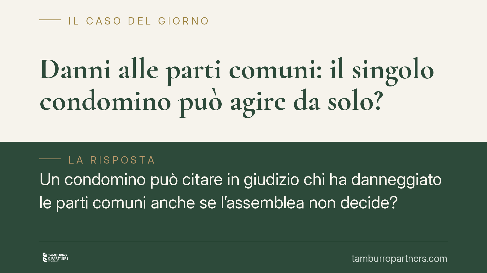

Danni alle parti comuni: il singolo condomino può agire da solo?
Un condomino può citare in giudizio chi ha danneggiato le parti comuni anche se l'assemblea non decide? La giurisprudenza di legittimità riconosce da tempo una legittimazione autonoma del singolo, a tutela della propria quota di comproprietà. Un principio consolidato che, però, va maneggiato con attenzione: non ogni azione individuale produce effetti sull'intero condominio, e i rischi processuali restano a carico di chi agisce.

Il caso: agire senza l'assemblea
La domanda ricorre spesso negli studi legali. L'assemblea non delibera un'azione risarcitoria per danni alle parti comuni — un lastrico rovinato, una facciata deteriorata, opere eseguite male — e il singolo condomino si chiede se possa muoversi per proprio conto.
La risposta della giurisprudenza di legittimità è affermativa, ma richiede alcune precisazioni. Il condomino è comproprietario delle parti comuni per la quota corrispondente alla sua unità immobiliare. Da qui deriva un interesse diretto e concreto alla loro conservazione, che fonda una legittimazione ad agire autonoma rispetto a quella dell'amministratore.
Inquadramento normativo
L'art. 1117 del codice civile individua le parti comuni dell'edificio: suolo, fondazioni, muri maestri, tetti, scale, androni e ogni altra parte destinata all'uso collettivo. Su di esse ciascun condomino vanta un diritto di comproprietà proporzionale al valore della sua unità.
Occorre distinguere due piani. L'art. 1131 c.c. attribuisce all'amministratore la rappresentanza dei condomini per l'esecuzione delle delibere e per la tutela delle parti comuni: è lui che, di regola, agisce e resiste in giudizio per il condominio. Questa legittimazione, però, non è esclusiva. La giurisprudenza è costante nel ritenere che accanto ad essa sopravviva la legittimazione concorrente del singolo condomino, il quale può agire — anche senza previa delibera e anche in caso di inerzia dell'amministratore — per tutelare la propria quota di proprietà sulle parti comuni.
Il confine è netto: il condomino può domandare il risarcimento del danno che incide sul bene comune nella misura del proprio diritto; non può invece assumere iniziative che vincolino l'intero condominio o incidano su decisioni riservate alla competenza dell'assemblea (ad esempio l'approvazione di opere o la modalità di ripartizione delle spese).
Implicazioni pratiche
Per il condomino questo significa poter reagire a un danno anche quando gli altri restano fermi. L'inerzia dell'assemblea non paralizza chi vuole difendere la propria posizione.
Attenzione, però, ai profili di responsabilità dei soggetti coinvolti. Nei confronti dell'appaltatore o del costruttore, i vizi delle opere sono soggetti ai regimi di garanzia previsti dagli artt. 1667 e 1669 c.c., con termini di denuncia e di decadenza specifici: la garanzia per difformità e vizi dell'appalto (art. 1667 c.c.) e quella, più severa, per rovina e gravi difetti dell'immobile (art. 1669 c.c.). Sono termini brevi e la loro decorrenza va valutata caso per caso.
Diversa la posizione del direttore dei lavori. La sua responsabilità verso il singolo condomino non è scontata: può avere natura contrattuale, quando esista un rapporto professionale diretto, oppure extracontrattuale, se il danno deriva dalla violazione di regole tecniche a prescindere da un incarico ricevuto dal condomino. L'inquadramento non è un tecnicismo: incide sull'onere della prova, sui termini di prescrizione e sulla stessa strategia processuale.
Va infine considerato l'aspetto economico. Chi agisce da solo sostiene per intero i costi del giudizio e assume il rischio di soccombenza, senza poterlo ripartire sugli altri condomini. È una valutazione da compiere prima di depositare l'atto, non dopo.
Cosa fare in concreto
- Documentare il danno con precisione: fotografie datate, eventuali relazioni tecniche e ogni elemento utile a individuare causa ed entità del pregiudizio.
- Individuare con certezza il soggetto responsabile — appaltatore, costruttore, direttore dei lavori — e la natura della sua responsabilità, perché da essa dipendono termini e presupposti dell'azione.
- Verificare i termini di denuncia e decadenza per i vizi delle opere (artt. 1667 e 1669 c.c.), che possono maturare rapidamente.
- È opportuna un'analisi preventiva della portata dell'azione, per distinguere ciò che tutela la sola quota individuale da ciò che rientra nella competenza dell'assemblea.
- Ponderare costi e rischio di soccombenza prima di procedere in via autonoma, valutando anche l'ipotesi di sollecitare formalmente l'amministratore.
Disclaimer
Contributo informativo a cura di Tamburro & Partners — Avv. Giuseppe Tamburro. Non costituisce parere legale.
Ogni condominio ha una storia a sé.
Se gestisci un'amministrazione e vuoi un confronto su una specifica questione condominiale, scrivi allo studio. Ti rispondiamo entro un giorno lavorativo.